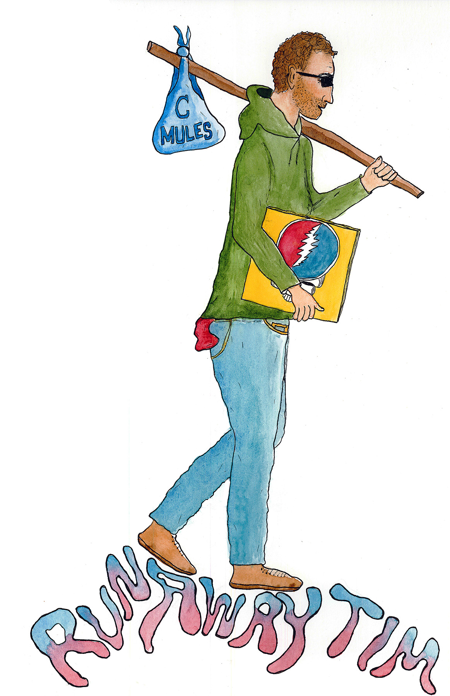

Runaway Tim

Thanks for your interest in my jam band radio show on WMHB Waterville, 89.7 FM.
My show Runaway Tim airs on occasional Thursdays from 10am-12pm ET and can be streamed online. Here is a current promo for my show. For information about me, click here.
The show's name is a nod to PHiSH who have a song called "Runaway Jim" while conveying that I've escaped my office in the Department of Economics for the radio station across campus at Colby College.
I've posted playlists from my shows below (dates for live tracks in parentheses). Starting in the fall of 2024, I began collaborating regularly with my friend Thom Klepach for the second hour of my show (which I affectionately refer to as the "Tim Thom Club"). I employ a * to reflect episodes in which I was lucky enough to spend time learning from and partnering with Thom.
That rad watercolor? Artwork my brother-in-law Andy Samara created of me for the show as a surprise!
Not related to my show, but if you like the type of music I play, then I think you'll enjoy these things:
- my commencement sending (final speech) to the Colby College Class of 2024: raw footage or video with references included;
- this stereogram I made (I used AI to create the mask and then employed https://www.easystereogrambuilder.com).
{kind=link}
Setlists and Show Details (most recent first, expand all)
Improvement Movement: "In The Morning"
Karina Rykman: "City Kids" (2025/08/29)
Stevie Wonder: "Keep On Running"
Phish: "What's Going Through Your Mind" (2025/06/24)
Kikagaku Moyo: "Green Sugar"
Grateful Dead: "Mountains of the Moon"
Soft Cuff: "Mystery Box"
Twiddle: "Apples" (2022/07/29)
James Gang: "Funk #49"
Emahoy Tsegué-Maryam Guèbrou: "The Homeless Wanderer"
Agitation Free: "Music Factory" (1972/02)
Lily Seabird: "Trash Mountain (1pm)"
Cindy Lee: "Dracula"
Trey Anastasio Band: "Mr. Completely" (2002/10/25)
Miles Davis: "Yesternow"
Chalk Dinosaur: "Synchronicity"
Mort Garson: "Plantasia"
Phish: "Dirt"
Mikaela Davis: "Starlite Tonite"
Jerry Garcia Band: "Catfish John" (1980/03/01)
Ween: "Push th'Little Daisies"
Misha Panfilov: "When I See You (It Feels Wonderful)"
Hiromi featuring Sonicwonder: "Sonicwonderland"
Fleetwood Mac: "You Make Loving Fun"
LCD Soundsystem: "Us v Them"
Phish: "Run Like an Antelope" (aka "Roll Like A Cantaloupe") (1991/11/14)
Stereolab: "Refractions in the Plastic Pulse"
Kikagaku Moyo: "Pond"
Frank Zappa: "Watermelon in Easter Hay"
Phish: "Bouncing Around the Room" (2026/07/10)
Hank Heaven: "Daddy's Gonna Buy You a Car"
Toro y Moi: "Ordinary Pleasure"
Belle and Sebastian: "Me and the Major"
LCD Soundsystem: "Someone Great"
Dolly Parton, Emmylou Harris, & Linda Ronstadt: "Bury Me Beneath the Willow" (1976/04/27)
Dolly Parton: "Potential New Boyfriend"
Ofege: "It's Not Easy"
SML: "The Drums" (2025/12/03)
Talking Heads: "Thank You for Sending Me an Angel"
Phish: "Crosseyed and Painless" (2026/07/29)
Mike Gordon: "Steps" (2020/01/22)
Curtis Mayfield: "We Got to Have Peace"
Parlor Greens: "In Green We Dream"
Guru: "Loungin'"
Bob Dylan: "Ballad of a Thin Man"
The Beatles: "Yer Blues"
Talking Heads: "Mr. Jones"
Counting Crows: "Mr. Jones"
Alice Coltrane: "Huntington Ashram Monastery"
Alice Coltrane: "Turiya"
Alice Coltrane: "Paramahansa Lake"
Alice Coltrane: "Via Sivanandagar"
Alice Coltrane: "IHS"
Alice Coltrane: "Jaya Jaya Rama"
Ravi Shankar: "Raga Bhupal Todi Tala Ardha Jaital"
Ravi Shankar: "Tabla Solo In Shikhar Tal"
Sonny Rollins: "Oleo" (1962/07/27-30)
David Byrne: "Light Bath"
David Byrne: "His Wife Refused"
David Byrne: "Ade"
David Byrne: "Walking"
David Byrne: "Two Soldiers"
David Byrne: "Under the Mountain"
David Byrne: "Dinosaur"
David Byrne: "The Red House"
David Byrne: "Wheezing"
David Byrne: "Eggs in a Briar Patch"
David Byrne: "Poison"
David Byrne: "Cloud Chamber"
David Byrne: "Black Flag"
David Byrne: "My Big Hands (Fall Through the Cracks)"
David Byrne: "Combat"
David Byrne: "Leg Bells"
David Byrne: "The Blue Flame"
David Byrne: "Big Business"
David Byrne: "Dense Beasts"
David Byrne: "Five Golden Sections"
David Byrne: "What a Day That Was"
David Byrne: "Big Blue Plymouth (Eyes Wide Open)"
David Byrne: "Light Bath"
Herbie Hancock: "Hang Up Your Hang Ups"
Angine de Poitrine: "Fabienk"
True Loves: "No Sayers"
Gary Burton Quintet with Eberhard Weber: "The Colours of Chloë"
Tyler Ballgame: "Matter of Taste"
Otis Redding: "Fa-Fa-Fa-Fa-Fa (Sad Song)"
Randy Newman: "You Can Leave Your Hat On"
Talking Heads: "Psycho Killer"
? and The Mysterians: "96 Tears"
Don Cherry: "Brown Rice"
Phish: "Ghost" (1998/11/11)
Aretha Franklin: "Rock Steady"
10 Ft. Ganja Plant: "Swedish Prison"
Jerry Garcia Band: "Save Mother Earth" > "Imagine"(1972/02/06)
Phish: "Tweezer" > "Mind Left Body Jam" > "Sparks" > "Makisupa Policeman" > "Digital Delay Loop Jam" > "Sweet Emotion Jam" > "Walk Away" > "Cannonball Jam" > "Purple Rain" > "Hold Your Head Up Jam" > "Tweezer Reprise" (1994/05/07)
Sun Ra: "Springtime Again"
David Byrne: "Like Humans Do"
Asha Puthli & Say She She: "Pawa!"
The Olympians: "Saturn"
Frank Zappa, Captain Beefheart, The Mothers: "Carolina Hard-Core Ecstasy"
Peter Tosh & Mick Jagger: "(You Gotta Walk) Don't Look Back"
Organically Good Trio: "Beam Me Up"
Bo Diddley: "Bo Diddley"
Trey Anastasio: "Ether Sunday"
Dr. John: "Mama Roux"
Lee Dorsey: "Everything I Do Gohn Be Funky (From Now On)"
The Disco Biscuits: "Mr. Don" > "Bernstein & Chasnoff" (2002/08/09)
J.J. Cale: "Mississippi River"
Strangefolk: "Sweet Libation"
Surprise Chef: "Friendship Theme"
Led Zeppelin: "The Rain Song"
King Gizzard & The Lizard Wizard: "Ice V"
Ebo Taylor & Uhuru-Yenzu: "Victory"
James Gang: "Walk Away"
Phish: "Fuego" > "Dark Puddle" (2026/04/23)
Glenn Miller Orchestra: "Moonlight Serenade"
SML: "Taking out the Trash"
Steve Kimock Band: "Elmer's Revenge"
Angine de Poitrine: "Sherpa"
Can: "Moonshake"
Phish: "Fuego" (2024/04/20)
Fela Kuti: "Water No Get Enemy"
Billy Strings: "Meet Me at the Creek"
Ween: "A Tear for Eddie"
Ibex Band: "Kemd'layey"
Scientist: "Drum Song"
Eggy: "Woah There" (2025/03/20)
Jerry Garcia Band featuring Bruce Hornsby: "Shining Star" (1991/11/09)
The Allman Brothers Band: "In Memory of Elizabeth Reed"
Seirra Hull: "Boom"
Tomo Katsurada & Misha Panfilov: "Mostra"
TAKAAT: "Amidinin"
Phish: "Waste" (1999/09/14)
Neighbor: "Trippin' In A Van" (2023/05/19)
Roger Eno & Brian Eno: "Spring Frost"
Tommy Guerrero: "Organism"
Phish: "Character Zero" (1997/07/21)
Phish: "A Song I Heard the Ocean Sing" (2026/01/31)
Christian Voice: "Joyful Sound/Amazing Grace"
The Victory Travelers: "Power Lord"
Rev. Milton Brunson: "Play It By Ear"
Southland Singers: "Trouble All Around Me"
The Swan Silvertones: "If You Think Your God Is Dead, Try Mine"
Southland Singers: "Serve the Lord"
Frank Zappa: "Transylvania Boogie"
Flea: "Frailed"
Steve Kimock Band: "Ice Cream"
Xavier Lynn: "Louisiana Lady"
Brian Eno & David Byrne: "The Jezebel Spirit"
Charlie Feathers: "When You Come Around"
Long Beach Dub Allstars: "Take Warning"
Goose: "Camino I" > "Camino II"
Joe Zawinul: "In a Silent Way"
The Jimi Hendrix Experience: "Little Wing"
Phish: "Birds of a Feather" (1998/04/02)
Grateful Dead: "Eyes of the World" (1974/08/06)
Kalaparusha: "Jays"
Sunny Murray and the Untouchable Factor featuring Byard Lancaster: "Over the Rainbow"
Randy Weston: "Portrait of Frank Edward Weston"
Melanie: "Brand New Key"
Phish: "The Moma Dance" (2003/02/26)
The Velvet Underground & Nico: "Venus in Furs"
Konk: "Baby Dee"
Sven Wunder: "Lotus"
Gorillaz, Miho Hatori, Tina Weymouth: "19-2000"
Mike Gordon: "Pendulum" (2018/03/11)
Electric Octopus: "Mystery"
Hugo Blanco: "Cumbia Con Arpa"
Pigeon: "Mirror Test"
Liim: "Important To Ya"
Pink Floyd: "Set the Controls for the Heart of the Sun" (1971/10/4-7)
Ike & Tina Turner and the Ikettes: "Come Together"
Pigeons Playing Ping Pong: "High as Five"
Karina Rykman: "Joyride"
Tyler Ballgame: "Got a New Car"
Phish: "Wolfman's Brother" > "Jesus Just Left Chicago" (1997/03/01)
Jerry Jeff Walker: "Sangria Wine"
Phil and Friends: "Shakedown Street" > "The Wheel" > "Not Fade Away" (1999/04/15)
Need to find details on Movin' & Groovin' with African Music Today (African Explosion vinyl)The Revolutionaries: "79 Rock"
Phish: "Theme from the Bottom" > "Simple" (2025/12/28)
Ween: "It's Gonna Be (Alright)"
Jim O'Rourke: "Happy Trails"
Frank Zappa: "Chunga's Revenge" (Basement Version)
Frank Zappa: "Basement Jam"
Frank Zappa: "Work with Me Annie/Annie Had a Baby"
Frank Zappa: "Tommy/Vincent Duo II"
Frank Zappa: "Sharleena" (1970 Record Plant Mix)
Jonathan Fitoussi and Clemens Hourrière: "pendulum"
Jonathan Fitoussi and Clemens Hourrière: "lune d'afrique"
Jonathan Fitoussi and Clemens Hourrière: "valse"
Jonathan Fitoussi and Clemens Hourrière: "syncussion"
Jonathan Fitoussi and Clemens Hourrière: "aqueduc"
Kraftwerk: "Ruckzuck"
Kraftwerk: "Stratovarius"
Kraftwerk: "Klingklang"
Kraftwerk: "Atem"
Kraftwerk: "Megaherz"
Kraftwerk: "Vom Himmel Hoch"
Bob Weir: "Greatest Story Ever Told"
Bob Weir: "Black-Throated Wind"
Bob Weir: "Walk in the Sunshine"
Bob Weir: "Playing in the Band"
Bob Weir: "Looks Like Rain"
Bob Weir: "Mexicali Blues"
Bob Weir: "One More Saturday Night"
Bob Weir: "Cassidy"
Kingfish: "Lazy Lightnin"
Kingfish: "Supplication"
Bob Weir: "Only a River"
Bob Weir: "Cottonwood Lullaby"
Bob Weir: "Gonesville"
Bob Weir: "Lay My Lily Down"
Bob Weir: "Gallop on the Run"
Bob Weir: "Whatever Happened to Rose"
Bob Weir: "Ghost Towns"
Bob Weir: "Darkest Hour"
Bob Weir: "Ki-Yi Bossie"
Bob Weir: "Storm Country"
Bob Weir: "Blue Mountain"
Bob Weir: "One More River to Cross"
Say She She: "Purple Snowflakes"
Ween: "Stay Forever"
John Carroll Kirby: "Rainmaker"
Geese: "Gravity Blues"
MV & EE: "Environs"
Jim Stafford: "Wildwood Weed"
Alice Coltrane featuring Pharoah Sanders: "Journey in Satchidananda"
Mr. Bungle: "Pink Cigarette"
Ebo Taylor: "My Love and Music"
Phish: "Evolve" (2023/08/25)
Jalen Ngonda: "All About Me"
Pink Floyd: "Echoes" (1971/10/4-7)
Talking Heads: "Houses in Motion" (1980/11/8-9)
Phish: "Slave to the Traffic Light" (2012/12/30)
John Scofield and Dave Holland: "Not for Nothin'"
Edzayawa: "Naa Korle"
Madeline Bell: "That's What Friends Are For"
The Flaming Lips: "Ego Tripping at the Gates of Hell"
Polyrhythmics: "Au Jus"
Cosmic Couriers: "Culture In a Small Room"
Zach Tenorio: "Escape!"
King Gizzard & The Lizard Wizard: "Nuclear Fusion"
Led Zeppelin: "Black Mountain Side"
Say She She: "Disco Life"
Kokoroko: "Age Of Ascent"
Phish: "Mike's Song" > "Weekapaug Groove" (1995/12/01)
Dogs in a Pile: "Fenway"
Mikaela Davis: "11:11"
Circles Around The Sun: "Charleston Choogle"
Trey Anastasio and Tom Marshall: "Name"
Karate Boogaloo: "PS EmmyLou"
Peter Cat Recording Co.: "Memory Box"
Vusi Mahlasela, Norman Zulu & Jive Connection: "Themba Lami"
Misha Panfilov: "Vertical"
Sofie Birch: "Begin Sync End"
Sofie Birch: "Hills Bells Mother"
Sofie Birch: "Return from Silence"
Sofie Birch: "Kandisae"
Sofie Birch: "Myrian Myriad"
Sofie Birch: "Reverie"
Phish: "Runaway Jim" (1997/11/29)
Phish: "Sand" (2000/07/03)
Phish: "Free" (1997/07/02)
Phish: "Harry Hood" (1994/07/01)
Phish: "Buried Alive" (2021/10/31)
Phish: "Crazy Sometimes" (2018/10/31)
Messer Chups: "Crypt-a-Billy Tales"
Black Flamingos: "Flamingo From the Black Lagoon"
Blackball Bandits: "The Cursed Island"
Beware of Blast: "Bone Shaker Boogie"
Talking Heads: "Psycho Killer"
Phish: "Reba" (1994/10/31)
Phish: "Martian Monster" (2014/10/31)
Pumpkin Witch: "Summoning Ritual of the Pumpkin Witch"
Pumpkin Witch: "Ghastly Whispers from Beyond"
Pumpkin Witch: "Terror from the Funereal Fog"
Pumpkin Witch: "Fiendish Grave Robbers"
Frank Zappa: "The Torture Never Stops"
Phish: "Llama" (2018/10/20)
Sonny Clark: "Cool Struttin'"
My Morning Jacket: "Mahgeetah" (2005/11/12)
SML: "Feed the Birds"
The Horus All Stars: "Cristo Redentor"
JJ Whitefield: "Asir"
Brian Eno: "I'll Come Running"
Phish: "Split Open and Melt" (1994/12/01)
Greg Foat: "The Rituals of Infinity"
Mildlife: "Phase II"
Vida Blue: "If I Told You"
Natural Information Society: "Perseverance Flow"
Goose: "Give It Time"
Frank Zappa & The Mothers of Invention: "Inca Roads"
Strangefolk: "Lines and Circles"
Talking Heads: "Girlfriend is Better"
Phish: "Carini" (1997/02/17)
Daft Punk: "Veridis Quo"
Lonnie Donegan: "Jack O'Diamonds"
Led Zeppelin: "Your Time Is Gonna Come"
Mdou Moctar: "Afrique Victime"
KIMOCK: "Mother's Song"
Widespread Panic: "Ain't Life Grand"
The Pointer Sisters: "Chainey Do"
The Band: "To Kingdom Come"
Harold Budd & Hector Zazou: "Pandas in Tandem"
Lou Reed: "Vicious"
The Flying Burrito Brothers: "Just Can't Be"
Bronski Beat: "Smalltown Boy"
Harry Belafonte: "Muleskinner"
Billy Strings: "Meet Me at the Creek"
Earth, Wind & Fire: "September"
Altin Gün: "Goca Dünya"
Leo Kottke & Mike Gordon: "Rings"
Dorthy Ashby: "Soul Vibrations"
Stereolab: "I'm Going Out of My Way"
Phish: "Piper" > "Makisupa Policeman" (1998/07/06)
Grateful Dead & John Oswald: "Transitive Axis"
Circles Around the Sun: "Radiant Radish"
Kurt Vile: "Jesus Fever"
Etran de L'Aïr: "Amidinine"
Stereolab: "Brakhage"
Jerry Garcia Band: "After Midnight" > "Eleanor Rigby Jam" > "After Midnight"
Phish: "Bathtub Gin" (2025/09/13)
DOVS: "Verona Walls"
DOVS: "Psychic Geography"
DOVS: "Frames"
DOVS: "Vernal Fall"
DOVS: "Plants"
DOVS: "Ancient Rivers"
DOVS: "Monsoon Reason"
DOVS: "Rumi Nation"
DOVS: "Rooftop Blues"
Phish: "The Curtain With" (2000/09/17)
Lou Reed: "Coney Island Baby"
Cotton Jones: "Chewing Gum (Concrete Tooth Mix)"
Stereolab: "Contronatura"
Hannah Cohen: "Earthstar"
Good Trees River Band: "Right As Rain"
Improvement Movement: "Sun Will Rise Again"
Mulatu Astatke: "Gubèlyé"
The Folk Implosion: "Natural One"
Misha Panfilov: "Para O Sol"
Rikki Ililonga: "The Hole"
Rikki Ililonga: "Shebeen Queen"
Rikki Ililonga: "Zambia"
Rikki Ililonga: "Hot Fingers"
Rikki Ililonga: "Musamuseke"
Rikki Ililonga: "The Nature Of Man"
Rikki Ililonga: "Sansa Kuwa"
Rikki Ililonga: "Stop Dreaming Mr. D"
Rikki Ililonga: "The Queen Blues"
Rikki Ililonga: "Se-Keel-Me-Kweek"
Polyrhythmics: "Yeti, Set, Go"
Brian Eno: "Taking Tiger Mountain"
Mikaela Davis: "Don't Stop Now"
Gov't Mule: "Banks of the Deep End"
moe.: "Nebraska" (1998/07/17)
Redbone: "Come and Get Your Love"
Phish: "Wolfman's Brother" (1999/09/24)
Pink Floyd: "Green Is The Colour" (1970/01/23)
Pink Floyd: "Careful With That Axe, Eugene [sic]" (1970/01/23)
Pink Floyd: "Violent Sequence Excerpt" (1970/01/23)
Pink Floyd: "Biding My Time" (1970/01/23)
Pink Floyd: "The Amazing Pudding (Atom Heart Mother debut)" (1970/01/23)
Jerry Garcia Band: "Cats Under the Stars" (1991/11/23)
Link Wray: "Fallin' Rain"
Bunny Wailer: "Dancing Shoes"
Khruangbin: "Evan Finds the Third Room"
Trey Anastasio Band: "Words to Wanda" (2010/02/27)
Ween: "Hey There Fancypants"
Eggy: "Upside Down"
Sly & The Family Stone: "I Want to Take You Higher"
Improvement Movement: "Strange Secrets Worth Knowing"
Beans: "Slow"
Waxahatchee: "Fruits of My Labor"
Say She She: "Forget Me Not"
Phish: "Jesus Just Left Chicago" (1993/08/26)
Delvon Lamar Organ Trio: "Ain't It Funky Now"
Shpongle: "Dorset Perception"
Fela Kuti: "Jeun Ko Ku (Chop 'n Quench)"
Delegation: "Oh Honey"
Beat Circus: "The Mack"
Phish: "Walls of the Cave" (2021/08/06)
Phish: "Buried Alive" > "Tweezer Reprise" > "Reba" > "Tweezer Reprise" > "Funky Bitch" (2025/07/27)
Phish: "Roses Are Free" > "Tweezer Reprise" > "46 Days" (2025/07/27)
Phish: "About to Run" (2025/07/27)
Phish: "Split Open and Melt" > "Tweezer Reprise" (2025/07/27)
Phish: "Kill Devil Falls" > "Twist" (2025/07/27)
Phish: "Golden Age" > "Tweezer Reprise" > "Boogie On Reggae Woman" (2025/07/27)
Phish: "You Enjoy Myself" > "Tweezer Reprise" (2025/07/27)
Phish: "Tweezer" (2025/07/27)
Phish: "Harry Hood" (2025/07/27)
Stereolab: "Mystical Plosives"
Stereolab: "Aerial Troubles"
Stereolab: "Melodie Is a Wound"
Stereolab: "Immortal Hands"
Stereolab: "Vermona F Transistor"
Stereolab: "La Coeur et La Force"
Stereolab: "Electrified Teenybop!"
Stereolab: "Transmuted Matter"
Stereolab: "Esemplastic Creeping Eruption"
Stereolab: "If You Remember I Forgot How to Dream Pt. 1"
Stereolab: "Flashes from Everywhere"
Stereolab: "Colour Television"
Stereolab: "If You Remember I Forgot How to Dream Pt. 2"
Penza Penza: "Hang Loose!"
Penza Penza: "Carl Wilson's Morning Routine"
Penza Penza: "Summer Bats"
Penza Penza: "Bang-On"
Penza Penza: "Foxtrot"
Penza Penza: "Peninsula Song"
Terry Riley: "You're Nogood"
Mad Professor: Avianca "Dub 1" (Marin Gaye's "What's Going On?")
Asa Irons: "Apis Tone"
Asa Irons: "Avarice"
Asa Irons: "Happily We Go"
Asa Irons: "Go Light"
Grateful Dead: "U.S. Blues"
Calvin Harris: "Feel So Close"
Michael Jackson: "Smooth Criminal"
Stevie Wonder: "Superstition"
Jurassic 5: "What's Golden"
Bobby Brown: "My Prerogative"
Khruangbin: "So We Won't Forget"
Shaboozey: "A Bar Song (Tipsy)"
Glass Animals: "Heat Waves"
Guerilla Toss featuring Stephen Malkmus and Trey Anastasio: "Red Flag to Angry Bull"
Forrest Frank, Connor Price: "UP!"
Duke Ellington: "Take the 'A' Train"
Lou Hazel: "Riot of the Red"
Goo Goo Dolls: "Iris"
LSPLASH: "Elevator Jam"
Hyper Potions and James Landino: "Wooded Kingdom"
Penza Penza: "Deep Dive"
Tesla: "Heaven's Trail (No Way Out)"
GRiZ and Big Gigantic: "Good Times Roll"
Phish: "What's the Use?" (2022/07/16)
Nicky Youre and hey daisy: "Sunroof"
Elton John: "I'm Still Standing"
Modest Mouse: "Float On"
Champs United: "Take Me Out to the Ball Game"
Frank Zappa: "Waka/Jawaka"
Lettuce: "Lettsanity"
The String Cheese Incident: "Impressions" > "Glory Chords Jam" > "Midnight Moonlight" (2000/11/17)
Sly & the Family Stone: "Stand!"
The Beach Boys: "The Elements: Fire (Mrs. O'Leary's Cow)"
The Beach Boys: "Cool, Cool Water"
David Byrne featuring Ghost Train Orchestra: "Everybody Laughs"
Phish: "Ghost" (1999/09/12)
Frank Zappa: "The Grand Wazoo"
Mulatu Astatke: "Tezeta (Nostalgia)"
Ernest Ranglin: "Psychedelic Rock"
Van Morrison: "Madame George"
Penza Penza: "Why Do We Care About Anything?"
The Crusaders: "Stomp and Buck Dance"
Say She She: "C'est Si Bon"
Anna Butterss featuring Jeff Parker: "Dance Steve"
Phish: "Back on the Train" (2000/06/14)
Phish: "Twist" > Jam > "Walk Away" > "Also Sprach Zarathustra" (2000/06/14)
BADBADNOTGOOD: "Best Left Unsolved"
Fela Kuti: "Upside Down"
House Band: "Field Tripper"
Sufjan Stevens: "Chicago"
The Flaming Lips: "Flight Test"
Bacao Rhythm & Steel Band: "Real Hot"
Portugal. The Man: "V.I.S."
Marcia Griffiths: "Everything I Own"
The Budos Band: "Budos Rising"
Roots Architects: "1000 Light Years"
Grateful Dead: "Truckin'" (1972/05/26)
Phish: "Esther" (1996/08/16)
Skinshape: "Moonlight Walk"
Sol Clap: "Quantic"
Phish: "Bathtub Gin" (1997/08/17)
Grover Washington, Jr.: "Knucklehead"
Alice Phoebe Low: "Glow"
Eggy: "Shadow" (2023/06/09)
Bob Marley & The Wailers: "Stir It Up"
Grace Jones: "Pull Up To The Bumper"
Jeff Parker featuring Anna Butterss, Jay Bellerose, and Josh Johnson: "Late Autumn"
Phish: "Piper" > "Gumbo" (2000/09/27)
Circles Around the Sun: "Away Team"
Grateful Dead: "Don't Ease Me In"
Phish: "Tower Jam" (2003/08/02)
Phish: "Run Like an Antelope" (1998/04/03)
Circles Around The Sun: "Farewell Franklins"
Steely Dan: "Dirty Work"
Duke Ellington: "Jeep's Blues"
Jungle: "Back On 74"
Tuatara: "Tumbleweeds"
Phish: "Reba" (1996/08/17)
Parliament: "Liquid Sunshine"
800 Cherries: "Honeydew Blue"
Yo-Yo Ma, Kathryn Stott: "The Carnival of the Animals, R. 125: XIII. The Swan (Arr. for Cello and Piano)"
David Byrne: "Glass, Concrete & Stone"
Sven Libaek: "Turistus, Turisma"
Haruomi Hosono: "Cosmic Surfin'"
Frank Zappa: "Joe's Garage"
Haruomi Hosono: "Cosmic Surfin'"
Phish: "Ghost" (1997/12/02)
Charles Earland: "Leaving This Planet"
Charles Earland: "Red Clay"
Charles Earland: "Warp Factor 8"
Charles Earland: "Mason's Galaxy"
Charles Earland: "No Me Esqueca"
Stereolab: "Lo Boob Oscillator"
Trey Anastasio: "Everything's Right" (2022/08/19)
Pink Floyd: "Shine on You Crazy Diamond (Parts I-V)"
Snarky Puppy: "Xavi"
Radio Citizen: "Upper Class"
Incubus: "Battlestar Scralatchtica"
Broadcast: "Winter Now"
Say She She: "Pink Roses"
Phish: "Blaze On" (2021/08/06)
Phish: "Simple" (2021/08/06)
Rhiannon Giddens: "Mountain Hymn"
Rhiannon Giddens: "At the Purchaser's Option"
Joe McPhee: "Shakey Jake"
Billie Holiday: "I'll Be Seeing You"
Phish: "All Things Reconsidered" (1996/11/30)
André 3000: "I Swear, I Really Wanted to Make a 'Rap' Album but This Is Literally the Way the Wind Blew Me This Time"
Malvina Reynolds: "Love is Something (The Magic Penny)"
George Harrison: "What is Life"
Sun Ra: "Enlightenment"
Phish: "David Bowie" (1997/12/29)
Eden Express: "Corazon"
Eden Express: "Swelling Moon"
Eden Express: "Marble In Blood"
Eden Express: "Bushels Of Briar"
Eden Express: "Ocean Samba [Tristeza]"
Nat King Cole: "L-O-V-E"
Stevie Wonder: "Love's in Need of Love Today"
Phish: "Headphones (Monitor) Jam"
Michael Jackson: "What Goes Around Comes Around"
Taj Mahal: "Chevrolet"
Midwinter: "Sanctuary Stone"
Midwinter: "To Find a Reason"
Midwinter: "The Skater"
Midwinter: "Scarborough Fair"
Midwinter: "The Oak Tree Grove"
Midwinter: "Dirge"
King Sunny Ade: "Eje Nlo Gba Ara Mi"
Phish: "Fast Enough for You" (1993/08/17)
The Ronettes: "Baby, I Love You"
Cameron Winter: "Nausicaa (Love Will Be Revealed)"
Strangefolk: "Rachel"
moe.: "Happy Hour Hero" (2002/02/23)
Ringo Starr & Molly Tuttle: "Can You Hear Me Call"
Tommy Guerrero: "Badder Than Bullets"
Charly Garcia: "Nos Siguen Pegando Abajo"
Blue Hawaii: "Not my Boss!"
Goose Big Modern off live at the greek
Grateful Dead: "Uncle John's Band"
Rob Thomsett: "Sunday May 23"
Rob Thomsett: "It Might Have Been - It Will Be!"
Say She She: "Astral Plane"
Misha Panfilov: "Journey to the Lemon Moon"
The Beatles: "Flying"
Phish: "Axilla (Part II)" (2024/04/19)
Simon & Garfunkel: "Bridge Over Troubled Water"
Oingo Boingo: "Just Another Day"
Tomoko Aran: "Midnight Pretenders"
Andrew Lloyd Webber, 1983 Broadway Cast, Timothy Scott, Terrence Mann: "Mr. Mistoffelees"
The Marias: "No One Noticed"
The Allman Brothers Band: "Dreams"
Billy Strings: "Fire Line" > "Reuben's Train" (2024/02/25)
Grateful Dead: "Dark Star" > "Mind Left Body Jam" (1973/10/19)
The Band: "Chest Fever"
Herbie Hancock: "Gentle Thoughts"
Dogs In A Pile: "Blues for Brian" (2024/03/14)
Masayoshi Takanaka: "Oh! Tengo Suerte"
Talking Heads: "Road to Nowhere"
LaMP: "Out of Curiosity"
Khruangbin: "So We Won't Forget (Mang Dynasty Version)"
Caterina Barbieri: "This Causes Consciousness"
Emerald Web: "The Dragon's Gate"
Omni Gardens: "Algae After All"
Colleen: "Be Without Being Seen - Movement I"
Suzanne Ciani: "A Higher Place" (2020/01/25)
Craven Faults: "Doubler Stones"
7038634357: "Grace Eject"
Black Moth Super Rainbow: "Forever Heavy"
Clark: "Com Re-Touch/Pocket for Jack"
Rainer Veil: "Repatterning"
Jefre Cantu-Ledesma: "Stained Glass Body"
Elvis Presley: "Suspicious Minds"
Stereolab: "Metronomic Underground"
Mitski: "My Love Mine All Mine"
Geese: "I See Myself"
Phish: "Chalk Dust Torture" (2017/07/28)
Sammy Rae & The Friends: "Kick It to Me"
The Clash: "Overpowered by Funk"
Nautilus: "Yin Yin"
Tom Tom Club: "L'Elephant"
Rich Ruth: "Action at a Distance"
Rich Ruth: "Crying in the Trees"
Rich Ruth: "God Won't Speak"
Dogs In A Pile: "Rinky Dink Rag"
Say She She: "I Believe in Miracles"
The McCoys: "Hang on Sloopy"
Col. Bruce Hampton & The Aquarium Rescue Unit: "No Egos Underwater"
Duke Ellington: "Reflections in D"
Jerry Jeff Walker: "L.A. Freeway" (1972)
Ween: "It's Gonna Be (Alright)"
Blondie: "Rapture"
Shadowgrass: "Creatures of Havoc"
Phish: "Wolfman's Brother" (2012/12/28)
Black Pumas: "Hello"
Andy Summers and Robert Fripp: "New Marimba"
Barbara Streisand featuring Barry Gibb: "Guilty"
J.J. Cale: "Travelin' Light"
The Winston Brothers: "Straight Shooter"
Grateful Dead: "Terrapin Station" (1977/02/26)
Circles Around The Sun: "Gilbert's Groove"
Charlotte Adigéry & Bolis Pupul: "Haha"
Phish: "Cars Trucks Buses" (1997/12/29)
Circles Around The Sun and Mikaela Davis: "After Sunrise"
Eric Krasno: "Jezebel"
Quantic: "Atlantic Oscillations"
Blind Faith: "Can't Find My Way Home"
Billy Strings: "Gild the Lily"
Funkadelic: "One Nation Under a Groove"
Jimi Hendrix: "Hear My Train A Comin'"
Joe Satriani: "Satch Boogie"
Radiohead: "Subterranean Homesick Alien"
Psychedelic Breakfast: "Phaddy Boom Baddy" (2001)
Chicago: "Make Me Smile"
Chicago: "Colour My World"
Phish: "Gumbo" (1994/12/02)
Phish: "Brother" (2003/08/02)
Grateful Dead: "France"
Miles Davis: "Pharaoh's Dance"
MC5: "Kick Out the Jams"
Griot Galaxy: "Xy-Moch"
Griot Galaxy: "Zycron"
Griot Galaxy: "Zenolog Aintro"
Phish featuring Billy Strings: "Nellie Kane" (2024/08/06)
Phish featuring Billy Strings: "Beauty of My Dreams" (2024/08/06)
Miles Davis: "Billy Preston"
The Beatles with Billy Preston: "Get Back"
Billy Strings: "Highway Hypnosis" (2023/06/16)
Phish: "Mike's Song" > "I Am Hydrogen" > "Weekapaug Groove" (1997/11/22)
Suzanne Ciani: "Concert At WBAI Free Music Store" (1975)
Rick Nelson & The Stone Canyon Band: "Garden Party"
Ominous Seapods: "Jump for Joy" > "Jam" > "Jump for Joy Reprise" (1998)
Phish: "The Sloth" (1993/02/20)
Bob Marley & The Wailers: "Duppy Conqueror"
Eggy: "Golden Gate Dancer" (2022/10/31)
Misha Panfilov: "Few Layers for Smith"
The Crusaders: "Look Beyond the Hill"
Khruangbin: "Time (You and I)"
Blues Image: "Ride Captain Ride"
Yol Aularong: "Jeas Cyclo"
Ros Serey Sothea: "Chnam Oun Dop-Pram Muy"
Ros Serey Sothea: "Tngai Neas Kyom Yam Sra"
Yol Aularong & Liev Tuk: "Sou Slarp Kroam Kombut Srey"
Sinn Sisamouth: "Srolanh Srey Touch"
Pen Ran: "Rom Jongvak Twist"
Pen Ran: "Knyom Mun Sok Jet Te"
LA LOM: "'72 Monte Carlo"
36: "Signal"
36: "2249"
Phish: "Wilson" (2010/10/31)
Phish: "Punch You in the Eye" (1997/12/03)
Phish: "More" (2018/09/01)
Grateful Dead: "Viola Lee Blues" (1970/05/02)
Grateful Dead (Fare Thee Well): "Unbroken Chain" (2015/07/05)
Grateful Dead: "The Other One" > "Drums" > "The Other One" > "Me and Bobby McGee" > "The Other One" (1972/05/03)
Phish: "Sand" > "Ghost" > "Piper" (2012/09/02)
Phish: "Twenty Years Later" (2012/09/02)
Phish: "The Lizards" > "Harry Hood" (2012/09/02)
Phish: "Character Zero" (2012/09/02)
Jerry Garcia Band: "Midnight Moonlight" (1991/11/09)
Jerry Garcia Band: "What A Wonderful World" (1991/11/09)
Grateful Dead: "Eyes of the World"
Matt Valentine: "Ave B"
Talking Heads: "The Great Curve"
Harold Budd: "Juno"
James: "Laid"
Genesis: "The Grand Parade of Lifeless Packaging"
Peter Gabriel: "Road to Joy (Bright-Side Mix)"
John Cale: "The Soul of Carmen Miranda"
Devo: "Come Back Jonee"
Coldplay: "Yes/Chinese Sleep Chant"
U2: "Pride (In the Name of Love)"
David Bowie: "Heroes"
MGMT: "Brian Eno"
Phish: "Brian and Robert"
Fripp & Eno: "Heavenly Music Corporation IV"
Brian Eno: "Here Come the Warm Jets"
Brian Eno: "King's Lead Hat"
Brian Eno: "Spider and I"
Brian Eno: "Discreet Music"
Cluster: "Plas"
Billy Strings: "Gild the Lily"
Phish: "Julius" (2011/09/14)
Phish: "What's Going Through Your Mind" (2024/08/15)
Pink Floyd: "Mother"
Talking Heads: "Life During Wartime" (1983/12)
Frank Zappa: "King Kong"
Dr. John: "Gris-Gris Gumbo Ya Ya"
The Ramsey Lewis Trio: "The 'In' Crowd" (1965/05)
Liquid Liquid: "Cavern"
Mustafa Özkent: "Emmioğlu"
Mdou Moctar: "Imajighen"
Mdou Moctar: "Tchinta"
Gene Ammons: "Jivin' Around"
Grateful Dead: "Dupree's Diamond Blues"
Grateful Dead: "Truckin'"
Phish: "Uncle Pen" (1995/12/07)
Miles Davis: "Mtume"
Phish: "The Squirming Coil" > "Big Ball Jam" (1993/05/08)
Sister Nancy: "Bam Bam"
Bob Dylan: "Black Diamond Bay"
Peter King: "Ajo"
Arc De Soleil: "Chameleon Sunday"
Phish: "2001" (1999/09/29)
Jerry Garcia and Merl Saunders: "Save Mother Earth" (1972/01/19)
Dojo Cuts featuring Roxanne: "Crazy Good"
The Beatles: "Hey Bulldog"
Phish: "Reba" (1994/10/31)
The Funkees: "Dancing Time"
Margo Price featuring Billy Strings: "Too Stoned to Cry"
Medeski Scofield Martin & Wood: "In Case the World Changes Its Mind"
Linton Kwesi Johnson: "Time Come"
Carole King: "Tapestry"
Phish: "Sample in a Jar" (2022/08/10)
Phish: "Drowned" (2000/09/14)
Ghost Funk Orchestra: "Infinite Dark"
Misha Panfilov: "Solar Blast"
Shamek Farrah: "First Impressions"
Charles Rouse: "Hopscotch"
The Who: "Eminence Front"
MGMT: "Weekend Wars"
Clairo: "Second Nature"
Frank Zappa: "Night School"
The Clark Sisters: "Everything's Gonna Be Alright"
Stick Figure: "Sound of the Sea"
Phish: "My Friend, My Friend" (2024/09/01)
Modest Mouse: "Float On"
Pentangle: "Light Flight"
Sly & the Family Stone: "Everyday People"
Phish: "Down with Disease" (2022/07/16)
Beck: "Cellphone's Dead"
Talking Heads: "Making Flippy Floppy"
Eggy: "A Moment's Notice"
Phish: "Sleeping Monkey" (1994/06/17)
Phish: "hey stranger" (2022/12/22)
Phish: "Oblivion" (2023/07/23)
Phish: "Evolve"
Phish: "A Wave of Hope" (2022/08/07)
Phish: "Pillow Jets" (2024/04/20)
Phish: "Lonely Trip" (2021/08/11)
Phish: "Life Saving Gun" (2023/07/30)
Phish: "Monsters" (2023/10/15)
Phish: "Ether Edge" (2024/04/21)
Phish: "mercy" (2023/07/18)
David Bowie: "Sound and Vision"
The Olympians: "Apollo's Mood"
King Gizzard & the Lizard Wizard: "The River"
The Rolling Stones: "She’s a Rainbow"
Pavement: "Harness Your Hopes (B-Side)"
Phish: "Kill Devil Falls" (2023/07/23)
Phish: "Prince Caspian" (2015/08/22)
Jason Isbell and the 400 Unit: "If We Were Vampires"
Karina Rykman: "Plants"
Rustic Overtones: "Iron Boots"
Tedeschi Trucks Band: "Sweet and Low"
Phish: "Ass Handed" (2019/06/25)
Phish: "NICU" (1998/04/02)
Phish: "Sneakin' Sally Through the Alley" (1998/04/02)
Phish: "Twist" (1998/04/02)
Phish: "Mike's Song" > "The Old Home Place" > "Weekapaug Groove" (1998/04/03)
Phish: "Tweezer" > "Taste" (1998/04/04)
Phish: "Cavern" (1998/04/05)
Phish: "Fluffhead" > "Your Pet Cat" (2022/12/29)
Beastie Boys: "Sabrosa"
Nina Simone: "Love Me or Leave Me"
Masayoshi Takanaka: "Nights"
The Fearless Flyers: "Blue Angels"
The Flaming Lips: "Yoshimi Battles the Pink Robots, Pt. 1"
Mild High Club: "Homage"
Miles Davis: "Boplicity"
Phish: "Tweezer" (2022/04/21)
Ween: "Tried and True"
Don Melody Club: "Zontimenteel"
Grateful Dead (Fare Thee Well): "Throwing Stones" (2015/07/05)
Norma Tanega: "Walking' My Cat Named Dog"
Phish: "Sanity" (2011/09/02)
Phish: "1999" (2021/10/28)
Sharon Jones & The Dap-Kings: "Take Me With U"
Tom Petty, Jeff Lynne, Steve Winwood, Dhani Harrison, Prince & others: "While My Guitar Gently Weeps" (2004/03/15)
Prince, Bobby Z., and Andre Cymone: Untitled Instrumental #1
Prince, Bobby Z., and Andre Cymone: Untitled Instrumental #2
Prince, Bobby Z., and Andre Cymone: Untitled Instrumental #3
Prince, Bobby Z., and Andre Cymone: Untitled Instrumental #4
Prince, Bobby Z., and Andre Cymone: Untitled Instrumental #5
Prince, Bobby Z., and Andre Cymone: Untitled Instrumental #6
Prince, Bobby Z., and Andre Cymone: Untitled Instrumental #7
Prince, Bobby Z., and Andre Cymone: Untitled Instrumental #8
Chaka Khan: "I Feel for You"
Madhouse: "Eight"
Prince: "I Would Die 4 U" extended version
Phish: "Purple Rain" (1993/08/14)
Phish: "AC/DC Bag" (2023/07/30)
The Flaming Lips: "Race for the Prize"
Tommy Guerrero: "Sidewalk Soul"
Taylor Swift: "You Need to Calm Down" (2019/09/09)
Taylor Swift: "Sweet Nothing"
The Velvet Underground: "Oh! Sweet Nuthin'"
Camper Van Beethoven: "Pictures of Matchstick Men"
Dead Kennedys: "Soup is Good Food"
Phish: "Slave to the Traffic Light" (1995/12/07)
The Rhythm Kings: "The Promise"
Talking Heads: "Cities"
Phish: "Cities" (1997/07/01)
Phish: "Dog Log" (1994/11/25)
Goose: "Earthling or Alien?" (2023/04/14)
Phish: "Free Bird" (1998/10/30)
Phish: "It's Ice" (1992/04/18)
Daniel Donato: "Ghost Riders in the Sky"
Janis Joplin: "Trust Me"
Frank Zappa: "Big Swifty"
Margo Price: "Tennessee Song"
King Gizzard & The Lizard Wizard: "Magenta Mountain"
William Onyeabor: "Fantastic Man"
The Doors: "Tell All the People"
Phish: "Ruby Waves" (2023/10/11)
Fat Freddy's Drop: "Bohannon"
Rubblebucket: "Party Like Your Heart Hurts"
Medeski, Martin & Wood: "The Dropper"
Phish: "Driver" (1998/11/20)
Phish: "Punch You in the Eye" (1996/08/17)
The Jones Girls: "Who Can I Run To"
Beck: "Broken Train"
Gorillaz featuring Bootie Brown: "Dirty Harry"
O$VMV$M: "Dill Big Choo"
Pink Floyd: "Another Brick in the Wall, Pt. 2"
Spafford: "Leave the Light On"
The Rolling Stones: "Shine a Light"
Phish: "Sand" (2023/08/25)
Ebo Taylor: "Odofo Nnyi Ekyir Biara"
David Bowie: "The Wild Eyed Boy From Freecloud" > "All The Young Dudes" > "Oh! You Pretty Things" (1973/07/03)
Jeff Beck: "Constipated Duck"
Ween: "Freedom of '76"
Phish: "Faht"
TOKYO GROOVE JYOSHI: "Funk No. 1"
Santo & Jonny: "Sleepwalk"
The Monkees: "Porpoise Song"
Tom Tom Club: "Genius of Love"
Phish: "Chalk Dust Torture" (2023/08/25)
Judy Garland: "Over the Rainbow"
The Waitresses: "Christmas Wrapping"
Pink Floyd: "Brain Damage"
Flo Rida: "Good Feeling"
Paul Russell: "Lil Boo Thang"
Talking Heads: "Slippery People"
Dropkick Murphys: "I'm Shipping Up to Boston"
Masked Wolf: "Astronaut in the Ocean"
Phish: "Contact" (2011/12/28)
Kathryn Jones: "National Lampoon's Christmas Vacation"
Phish: "Runaway Jim" (2021/08/10)
David Bowie: "Rock 'n' Roll With Me"
Phish: "Buffalo Bill" (1997/08/17)
Phish: "NICU" (1997/08/17)
Linda Kemp: "Don't Go Hiding Your Light"
Bela Fleck And The Flecktones: "The Sinister Minister"
Grateful Dead: "New Speedway Boogie" (1970/05/15)
James Brown: "Funky President (People It's Bad)"
Phish: "Vultures" (1998/11/27)
David Bowie: "Fascination"
Phish: "Dirt" (2015/07/28)
Beastie Boys: "Intergalactic"
Phish: "Stash" > "Manteca" > "Stash" > "Dog Faced Boy" > "Stash" (1995/11/14)
Vulfpeck: "Adrienne & Adrianne"
Twiddle: "Polluted Beauty" (2014/06/02)
Billy Strings: "Heartbeat of America"
Phish: "The Curtain" > "You Enjoy Myself" > "I Didn't Know" (1997/11/28)
Phish: "Maze" (1997/11/28)
Phish: "Farmhouse" (1997/11/28)
Phish: "Black-Eyed Katy" (1997/11/28)
Phish: "Theme from the Bottom" > "Rocky Top"(1997/11/28)
Phish: "Timber (Jerry the Mule)" > "Limb By Limb" (1997/11/28)
Phish: "Slave to the Traffic Light" > "Ghost" > "Johnny B. Goode" (1997/11/28)
Phish: "My Soul" (1997/11/28)
The String Cheese Incident: "BollyMunster" (2012/07/12)
Phish: "Brother" > "Brother Reprise" (1998/04/04)
Phish: "Crosseyed and Painless" (1996/11/02)
The Instant Automations: "Johns Vacuum Cleaner"
Phish: "I Didn't Know" (1994/12/29)
Khruangbin: "Mr. White"
Caamp: "Peach Fuzz"
Easy All Stars featuring Citizen Cope: "Karma Police"
Radiohead: "Idioteque"
Sturgill Simpson: "Make Art Not Friends"
The Kinks: "Victoria"
Deodato: "Also Sprach Zarathustra"
Phish: "Twenty Years Later" (2018/10/16)
Goose: "Arcadia" (2019/02/14)
Cyril "Dry Bread" Ferguson: "Ya Mar"
Son Seals: "Funky Bitch"
Will Smith: "Gettin' Jiggy With It"
Marvin Gaye: "Sexual Healing"
Charlie Parker: "Donna Lee"
Bob Marley and the Wailers: "Mellow Mood"
Josh White: "Timber (Jerry the Mule)"
Sam "Lightnin'" Hopkins: "Shaggy Dog"
Bob Marley and the Wailers: "Soul Shakedown Party"
The Jimi Hendrix Experience: "Bold as Love"
Stevie Wonder: "Boogie On Reggae Woman"
Clifton Chenier: "My Soul"
Prince: "Purple Rain"
War: "Low Rider"
Josh White: "Paul and Silas Bound in Jail"
Shuggie Otis: "Strawberry Letter 23"
Duke Ellington: "Take the 'A' Train"
The Jimi Hendrix Experience: "Izabella" (1969/12/31)
Jimmy Smith: "Back At The Chicken Shack"
The Mighty Diamonds: "Have Mercy"
Dizzy Gillespie: "Manteca"
Lee Dorsey: "Sneakin' Sally Thru The Alley"
Peter Tosh: "Legalize It"
Tay Zonday: "Chocolate Rain"
Herbie Hancock: "Maiden Voyage"
The Jimi Hendrix Experience: "Fire"
Chuck Berry: "Johnny B. Goode"
Phish: "Rift" (1994/06/22)
Phish: "Guelah Papyrus" (1993/08/14)
Phish: "Divided Sky" (1996/08/13)
Phish: "Reba" (1994/10/31)
Phish: "Tube" > "Dayton Jam" (1997/12/07)
Phish: "My Sweet One" (2010/08/13)
Dave Matthews Band: "Lie in Our Graves" (2000/08/29)
Phish: "Glide" (1993/04/17)
Phish: "You Enjoy Myself" > "The Little Drummer Boy" (1999/12/02)
Grateful Dead: "Help on the Way/Slipknot!" > "Franklin's Tower" (1975/08/13)
Mandré: "Solar Flight (Opus I)"
Phish: "Beauty of My Dreams" (1998/07/15)
Toots and the Maytals: "Pressure Drop"
Daft Punk: "Touch"
The Velvet Underground: "New Age"
Shaky Feelin': "Train Station" (2013/04/24)
Phish: "What's the Use?" (1999/09/14)
Billy Preston: "Outa Space"
Genesis: "Watcher of the Skies"
Phish: "Dinner and a Movie" (2004/06/17)
Phish: "Lawn Boy" (2017/07/25)
Herbie Hancock: "Steppin' in It"
The Velvet Underground: "Oh! Sweet Nuthin'"
Tony Rice: "Red Haired Boy"
George Harrison: "Miss O'Dell"
The Flaming Lips: "In the Morning of the Magicians"
The Beatles: "Maxwell's Silver Hammer"
Phish: "Glide"
Phish: "Fee"
Led Zeppelin: "The Crunge"
Santiago: "Bionic Funk"
The Beach Boys: "Wouldn't It Be Nice"
Dr. John: "Right Place, Wrong Time"
Trey Anastasio Band: "Simple Twist Up Dave" (2002/11/01)
Talking Heads: "(Nothing but) Flowers"
Ghost of Paul Revere: "San Antone"
Grateful Dead: "Fire on the Mountain" (1978/05/11)
Dopapod: "Dracula's Monk"
Phish: "Shafty" (1998/04/04)
Quadrafunk: "Blazing in My Underwear"
Vulfpeck: "Disco Ulysses"
The Rolling Stones: "Sympathy for the Devil"
Phish: "Sand" > "Ghost" > "Also Sprach Zarathustra" (2016/01/15)
Phish: "Harry Hood" (2016/01/16)
Phish: "Mercury" (2017/01/14)
Phish: "I Always Wanted It This Way" > "Death Don't Hurt Very Long" (2019/02/21)
Phish: "Set Your Soul Free" (2019/02/22)
Goose: "Hot Tea" (2020/01/25)
Asha Puthli: "Space Talk"
Tower of Power: "The Educated Bump, Part I" > "The Educated Bump, Part II"
Twiddle: "White Light" (2018/07/27)
Pure Colors: "Drum Machine"
Candido: "Candido's Funk"
Percy Hill: "Color in Bloom"
Phish: "Tweezer" (2019/12/30)
Jerry Garcia Band: "Don't Let Go" (1990/09/01)
Phish: "Shade" (2015/07/28)
Kung Fu: "Samurai" (2013/05/16)
Kung Fu: "Sfvendago"
The Breakfast: "Superfly Phaddy Fat"
Phish: "Esther" (1993/02/21)
The Velvet Underground: "Sunday Morning"
Phish: "Split Open and Melt" (1997/08/10)
Grateful Dead: "Dark Star" > "Morning Dew" (1972/09/21)
Frank Zappa: "Zoot Allures"
Phish: "Bug" (2010/08/14)
Phish: "Bathtub Gin" (1998/07/29)
The Rolling Stones: "Dance (Pt. 1)"
Turkuaz: "Heat Drop"
Leftover Salmon: "Unplug That Telephone" (2001)
Link Wray: "La De Da"
Strangefolk: "Mama" (2000/02/25)
Soule Monde: "Bernard" (2019/01/31)
Grateful Dead: "Cosmic Charlie" (1976/06/14)
Phish: "Piper" > "Guy Forget" (2000/10/01)
Medeski Martin & Wood: "The Lover"
Phish: "Good Times Bad Times" > "Tweezer Reprise" (1995/10/21)
Led Zeppelin: "Moby Dick" (1970/01/09)
The Police: "Synchronicity I"
Oysterhead: "Little Faces" (2006/06/16)
Snarky Puppy: "Skate U" (2012/06/09)
Talking Heads: "Crosseyed and Painless"
Rush: "YYZ" (1980/06/10)
James Brown: "Funky Drummer"
Umphrey's McGee: "Divisions" (2011/05/28)
Phish featuring Bob Gulloti: "Ya Mar" > "Drums" (1997/07/25)
Disco Biscuits: "Shelby Rose" (2007/11/03)
Dave Matthews Band: "Ants Marching" (2007/09/08)
Pink Floyd: "Shine on You Crazy Diamond"
Aqueous: "Fearless" (2018/06/09)
Disco Biscuits: "Run Like Hell" (2007/07/11)
Umphrey's McGee: "In the Flesh" > "Another Brick in the Wall (Part 2)" (2012/11/10)
Gov't Mule: "Have a Cigar" (2011/06/04)
Phish: "Harpua" (1998/11/02)
Phish: "Speak to Me" (1998/11/02)
Phish: "Breathe" (1998/11/02)
Phish: "On the Run" (1998/11/02)
Phish: "Time" (1998/11/02)
Phish: "The Great Gig in the Sky" (1998/11/02)
Phish: "Money" (1998/11/02)
Phish: "Us and Them" (1998/11/02)
Phish: "Any Colour You Like" (1998/11/02)
Phish: "Brain Damage" (1998/11/02)
Phish: "Eclipse" (1998/11/02)
Phish: "Harpua" (1998/11/02)
Phish: "Frankenstein" (1994/10/31)
Phish: "Highway to Hell" (1996/10/31)
Phish: "Stash" (2010/10/31)
Phish: "Buried Alive" (2018/10/31)
Phish: "Kill Devil Falls" (2013/10/31)
Phish: "Mound" (2013/10/31)
Phish: "Ghost" > "Spooky" (2010/10/31)
Phish: "Wolfman's Brother" (1998/10/31)
Phish: "Birds of a Feather" (1998/10/31)
Phish: "When the Circus Comes" (2009/10/31)
Phish: "Maze" (1996/10/31)
Phish: "Big Black Furry Creature From Mars" (1990/10/31)
Phish: "Punch You in the Eye" (1995/12/31)
Keller Williams: "Freaker By the Speaker"
Grateful Dead: "Weather Report Suite" (1974/03/23)
Oysterhead: "Army's on Ecstasy"
Phish: "Lifeboy" (1996/08/13)
Greensky Bluegrass: "Doin' My Time" (2010/07/30)
Marco Benevento: "Humanz"
Yes: "Starship Trooper"
Phish: "Black-Eyed Katy" (1997/11/23)
Cream: "Toad" (1968/03/07)
The Velvet Underground: "Sweet Jane"
Grateful Dead: "Estimated Prophet" (1977/04/25)
Soule Monde: "Immigrant Too"
Janis Joplin: "Kozmic Blues"
Stevie Wonder: "Higher Ground"
Phish: "Halley's Comet" (1997/11/22)
George Harrison: "Dark Horse"
The String Cheese Incident: "Roundabout" (2002/06/27)
Strangefolk: "Furnace" (1997/04/25)
Phish: "Roses Are Free" (1998/04/03)
Jerry Garcia Band: "After Midnight" > "Eleanor Rigby" > "After Midnight" (1980/03/08)
Pigeons Playing Ping Pong: "Kiwi" (2018/02/09)
Phish: "Poor Heart" (1995/12/01)
Phish: "Run Like an Antelope" (1994/06/11)
The Jimi Hendrix Experience: "Castles Made of Sand"
Turkuaz: "Electric Habitat" (2019/04/18)
Phish: "Sparkle" (1993/02/19)
Phish: "Gotta Jibboo" (2017/12/31)
Miles Davis: "Right Off"
Phish: "Slave to the Traffic Light" (1999/10/09)
Phish: "David Bowie" (1991/05/10)
Steely Dan: "Show Biz Kids"
Stevie Wonder: "You Haven't Done Nothin'"
Vida Blue: "Analog Delay"
Phish: "It's Ice" (2017/07/23)
Islands: "Rough Gem"
Cory Wong with Sonny T: "Lunchtime"
Grateful Dead: "Morning Dew" (1972/05/26)
Phish: "Down with Disease" > "Birds of a Feather" (2016/10/30)
Eddy Grant: "Electric Avenue"
Peter Tosh: "Wanted Dread or Alive"
Widespread Panic: "Red Hot Mama" (1998/11/17)
Phish: "Cavern" (1993/05/08)
Phish: "The Curtain With" (2004/08/15)
Alvin and the Chipmunks: "Bad Romance"
Guster: "Satelite" (2019/08/10)
Simon and Garfunkel: "The Boxer"
The Beatles: "Rocky Racoon"
Bob Marley and the Wailers: "Jamming"
Guster: "Ramona" (2019/08/10)
Phish: "David Bowie" (1989/02/06)
Phish: "Loving Cup" (1999/07/25)
Alvin and the Chipmunks: "Funkytown"
The Rolling Stones: "You Can't Always Get What You Want"
QuadraFunk: "Disco Pirate"
Carl Doulgas: "Kung Fu Fighting"
Lil Nas X: "Old Town Road"
Queen: "Another One Bites the Dust"
Beach Boys: "Surfin' Safari"
Guster: "Fa Fa" (2019/08/10)
Gummibär: "I'm a Gummy Bear (The Gummy Bear Song)"
Tegan and Sara with The Lonely Island: "Everything is Awesome"
Flo Rida: "My House"
Phish: "Ruby Waves" (2019/07/14)
The Standells: "Dirty Water"
The Black Eyed Peas: "I Gotta Feeling"
Paul McCartney and Wings: "Band on the Run"
SpongeBob SquarePants: "Best Day Ever"
Heart: "Magic Man"
Sheryl Crow: "Real Gone"
Neil Young: "Sugar Mountain"
Gillian Welch: "Rock Of Ages"
Gillian Welch: "I'll Fly Away"
Ernest Ranglin: "Surfin'"
Grateful Dead with Hamza El Din and The Nubian Youth Choir: "Ollin Arageed" > "Fire on the Mountain" (1978/09/16)
David Bowie: "The Secret Life of Arabia"
UB40: "Kingston Town"
Phish: "David Bowie" (1994/12/29)
The Wood Brothers: "Ophelia" (2016/03/05)
Yonder Mountain String Band: "Half Moon Rising" (2006/02/24)
Tower of Power: "Squib Cakes"
Phish: "Stash" (2019/06/11)
Grateful Dead: "The Music Never Stopped" (1977/04/27)
King Gizzard & The Lizard Wizard: "Fishing for Fishies"
Phish: "AC/DC Bag" (1999/09/14)
Van Morrison: "Caravan"
Phish: "Ghost" (1997/11/17)
Steely Dan: "Your Gold Teeth"
Grateful Dead: "Viola Lee Blues" (1967/11/10)
The Mighty Diamonds: "Have Mercy"
Led Zeppelin: "Boogie with Stu"
The Meters: "Pungee"
moe.: "Rebubula" (1998/11/13)
My Morning Jacket: "One Big Holiday" (2005/11/11)
Phish: "Bathtub Gin" (1997/08/17)
Pink Floyd: "See Emily Play"
Santana: "Europa (Earth's Cry Heaven's Smile)" (1976/12)
Phish: "You Enjoy Myself" (1995/12/09)
The Allman Brothers Band: "Ain't Wastin' Time No More" (1972/12/31)
The New Mastersounds: "When it Rains"
Ryan Scott and the Kind Buds: "Wheels"
Beastie Boys: "Shambala"
The Boneheads: "Lonesome World"
The String Cheese Incident: "Sweet Spot"
Tedeschi Trucks Band: "Hard Case"
Papadosio: "The Sum"
Twiddle: "Syncopated Healing" (2015/10/10)
Turkuaz: "Nightswimming" (2015/09/25)
Phish: "Golden Age" (2016/10/28)
The Beatles: "Dig a Pony"
Ben Harper: "Strawberry Fields Forever"
The Beatles: "Oh! Darling"
George Harrison: "Isn't It a Pity Version One"
John Lennon: "#9 Dream"
Wings: "Silly Love Songs"
The Beatles: "What You're Doing"
The Beatles: "Ob-La-Di, Ob-La-Da"
The Beatles: "Eleanor Rigby"
The Beatles: "Yesterday"
The Beatles: "Things We Said Today"
The Beatles: "Tomorrow Never Knows"
The Beatles: "Free As A Bird"
The Beatles: "You Never Give Me Your Money"
Phish: "While My Guitar Gently Weeps" (1994/10/31)
Jeff Beck: "She's a Woman"
The Beatles: "Come Together"
The Beatles: "It's All Too Much"
Tedeschi Trucks Band: "Something" (2016/05/08)
Tedeschi Trucks Band: "I've Got a Feeling" (2015/03/28)
The Beatles: "Birthday"
The Beatles: "Rocky Raccoon"
Jelly Sauce: "I Want You (She's So Heavy)"
Pigeons Playing Ping Pong: "Somethin' For Ya"
Sturgill Simpson: "Call to Arms"
Lotus: "Greet the Mind" (2008/07/26)
The Flaming Lips: "Are You a Hypnotist?"
Phish: "Guelah Papyrus" (1993/05/08)
Hippo Campus: "Baseball"
Ripe: "Caralee"
Andy Frasco & The U.N.: "Chage of Pace"
Dopapod: "Numbers Need Humans"
The Meters: "It Ain't No Use"
Bela Fleck & The Flecktones: "Life in Eleven"
Rusted Root: "Send Me on My Way"
Herbie Hancock: "Cantaloupe Island"
Talking Heads: "Cities"
The J.B.'s: "Pass the Peas"
Twiddle: "Lost in the Cold" (2018/12/31)
The String Cheese Incident: "Joyful Sound" (2000/11/17)
Jerry Garcia Band: "The Harder They Come" (1978/03/18)
Trey Anastasio Band: "Gotta Jibboo" (1999/05/11)
Ghosts of the Forest: "Ghosts of the Forest"
Phish with Carl Gerhard: "Party Time" (2012/06/19)
Trey Anastasio Band: "Ruby Waves" (2008/10/19)
Trey Anastasio Band: "Alaska" (2014/11/28)
Trey Anastasio Band: "Sand" (2010/02/27)
Trey Anastasio Band: "First Tube" (2004/06/13)
Trey Anastasio Band: "Liquid Time" (2011/03/15)
Ghosts of the Forest: Tease Released 2018/12/18
Phish: "Bye Bye Foot" (1997/07/22)
Trey Anastasio Band with Jon Fishman: "Caymen Review" (2002/06/16)
Ghosts of the Forest: Tease Released 2018/12/20
Phish: "Gumbo" (1997/08/13)
The Allman Brothers Band: "Dreams" (1991/2)
Frank Zappa: "Whippin' Post" (1984/08/26)
The Allman Brothers Band: "Little Martha"
Wilson Pickett with Duane Allman: "Hey Jude"
Tedeschi Trucks Band with Trey Anastasio: "Mountain Jam" (2017/10/14)
Gregg Allman: "Don't Mess Up a Good Thing"
Dickey Betts & Great Southern: "Bougainvillea"
Gov't Mule with Dave Schools: "Blind Man in the Dark" (2003/05/03)
Spafford: "Midnight Rider" (2012/04/21)
The Allman Brothers Band: "In Memory of Elizabeth Reed" (1971/03/13)
Phish: "Possum" (1989/08/26)
Phish: "Bouncing Around the Room"
Phish: "Backwards Down the Number Line"
Phish: "Chalk Dust Torture"
Phish: "Fee"
Phish: "Rocky Top" (1991/07/12)
Phish: "The Lizards" (1996/08/17)
Phish: "Runaway Jim" (1998/11/27)
Phish: "Ocelot"
Phish: "More"
Phish: "Contact" (1994/07/16)
Phish: "Birds of a Feather" (1998/04/04)
Phish: "Roggae" (2003/02/26)
Phish: "The Mango Song" (1995/12/01)
Phish: "Tweezer Reprise" (1997/11/22)
The Beatles: "Birthday"
Nintendo and Shiromi: "Evolution of Super Mario Bros. Theme Song 1985–2018"
Phish: "555" (2013/10/31)
Dave Matthews Band: "#34" (2005/09/09)
Bob Marley and the Wailers: "Three Little Birds"
David Bowie: "1984"
The Derek Trucks Band: "Egg 15"
Steeley Dan: "Hey Nineteen"
The String Cheese Incident: "100 Year Flood" (2000/04/08)
Madhouse: "Six"
The Beatles : "When I'm Sixty-Four"
Pink Floyd: "Pigs (Three Different Ones)"
Dave Brubeck: "Take Five"
Phish: "Seven Below" (2004/06/20)
The Allman Brothers Band: "One Way Out" (1971/06/27)
Johnny Cash: "Five Feet High and Rising"
Phish: "46 Days" (2015/08/22)
Phish: "The Lizards" (1994/07/16)
Phish: "Colonel Forbin's Ascent" (1988/07/29)
Phish: "The Squirming Coil" (1997/02/17)
Phish: "Wading in the Velvet Sea" (1998/11/21)
Phish: "Tube" (1997/12/29)
Phish: "Funky B**ch" (1998/04/04)
Phish: "Alaska" (2014/07/09)
Phish: "The Connection"
Phish: "The Moma Dance" (1998/08/15)
Vulfpeck: "My First Car"
Phish: "Llama" (1994/10/18)
Steely Dan: "Pretzel Logic"
Guster: "Hello Mister Sun"
The Beatles: "Here Comes the Sun"
Cream: "Sunshine of Your Love"
Bob Marley and the Wailers: "Sun is Shining"
Matisyahu: "Sunshine"
Michael Franti & Spearhead: "The Sound of Sunshine"
Twiddle: "New Sun"
Grateful Dead: "Here Comes Sunshine" (1973/12/19)
Assembly of Dust with Mike Gordon: "Arc of the Sun"
Pink Floyd: "Set the Controls for the Heart of the Sun"
The Velvet Underground: "Who Loves the Sun"
Trey Anastasio: "Sometime After Sunset"
Santana: "One with the Sun"
The Doors: "Waiting for the Sun"
Ben Harper: "She's Only Happy in the Sun"
Xavier Rudd: "Follow the Sun"
The Beatles: "Good Day Sunshine"
Stevie Wonder: "You Are the Sunshine of My Life"
Frank Zappa: "Village of the Sun" (1978/09/29)
Dispatch: "Circles Around the Sun"
The Beatles: "Sun King"
Pigeons Playing Ping Pong: "Sunny Day" (2017/01/28)
Col. Bruce Hampton and the Aquarium Rescue Unit: "Time is Free" (1992/07/09)
Twiddle with Craig Brodhead: "Brown Chicken, Brown Cow" (2016/07/29)
moe.: "Brent Black" (2004/11/05)
Grateful Dead: "Help on the Way"/"Slipknot!" (1977/05/22)
Strangefolk: "Alaska" (1999/09/05)
Phish: "Free" (2004/06/17)
Phish: "Tube" (1998/04/02)
Phish: "Mike's Song" (1997/11/22)
Derek and the Dominos: "Layla"
The Beatles: "Something"
Phish: "Waste" > "Somewhere Over the Rainbow" (1998/08/09)
Neil Young with Crazy Horse: "Cinnamon Girl"
Dave Matthews Band: "Don't Burn the Pig" (2005/09/05)
Talking Heads: "This Must Be the Place (Naive Melody)"
Grateful Dead: "Good Lovin'" (1977/12/29)
Tedeschi Trucks Band: "Learn How to Love"
Widespread Panic: "Walkin' (For Your Love)" (2000/11/10)
Dave Matthews Band: "Say Goodbye" (2000/07/25)
Beck: "Debra"
Phish with Alison Krauss: "If I Could"
Grateful Dead: "Standing on the Moon" (1994/09/27)
Santana: "All the Love of the Universe"
Trey Anastasio Band: "Drifting" (2017/11/03)
Jerry Garcia Band: "Rubin and Cherise" (1991/11/23)
The Rolling Stones: "Loving Cup"
Phish: "Chalk Dust Torture" (1999/07/10)
Phish: "Ya Mar" (1998/07/25)
Phish: "Rift" (1996/11/07)
Phish: "Guyute" (1994/12/29)
Phish: "The Divided Sky" (1994/10/31)
Phish: "Carini" > "Taste" (2012/06/07)
Phish: "Waves" (2011/05/26)
TAUK: "Convoy" (2018/10/12)
Robert Walter's 20th Congress: "Hunk"
Umphrey's McGee: "Wappy Sprayberry" (2014/07/05)
moe.: "Captain America" (2005/02/22)
Joe Russo's Almost Dead: "Scarlet Begonias" > "Fire on the Mountain" (2015/10/03)
Melvin Seals and JGB: "Cats Under the Stars" > "The Harder They Come" (2016/10/14))
Ghosts of the Forest: Unnamed Tease
Pigeons PLaying Ping Pong: "Fortress" > "Time to Ride" (2017/10/06)
Twiddle: "Beethoven and Greene" (2018/11/24)
Pete Seegar: "We Shall Overcome"
The Beatles: "Blackbird"
The Jimi Hendrix Experience: "If 6 Was 9"
Phish: "Sneakin' Sally Through the Alley" (1998/04/02)
Robert Walter's 20th Congress: "Posthuman"
STS9: "EHM" (2018/06/09)
Jerry Garcia: "The Wheel"
Medeski Martin & Wood: "End of the World Party"
Twiddle: "Amydst the Myst"
Phish: "Makisupa Policeman" (1998/07/20)
William Onyeabor: "Fantastic Man"
Lettuce: "Elephant Walk" > "Madison Square" (2015/10/24)
Phish: "NICU" (1992/04/21)
Greensky Bluegrass: "Living Over"
Greensky Bluegrass: "All for Money"
Traffic: "Glad" > "Freedom Rider"
Phish: "Runaway Jim" (1995/12/31)
Paul and Linda McCartney: "Uncle Albert/Admiral Halsey"
The Claypool Lennon Delerium: "Blood And Rockets: Movement I, Saga Of Jack Parsons - Movement II, Too The Moon"
Beastie Boys: "In 3's"
Circles Around The Sun: "One for Chuck"
Can: "Vitamin C"
Papadosio: "Pool of Stars"
Phish: "Boogie on Reggae Woman" (1997/12/07)
Tedeschi Trucks Band: "Angel from Montgomery" > "Sugaree" (2013/01/19)
The Dean Ween Group: "Dickie Betts" (2015/02/18)
Grateful Dead: "Althea" (1981/03/14)
Toubab Krewe: "Salut"
Vulfpeck: "It Gets Funkier"
The Meters: "Sing a Simple Song"
Phish: "2001 (Also Sprach Zarathustra)" (1998/12/29)
Guster: "Stay with me Jesus"
Old & In the Way: "Orange Blossom Special"
The Allman Brothers Band: "In Memory of Elizabeth Reed"
The Muppets: "Mahna Mahna"
Trans-Siberian Orchestra: "Carol of the Bells"
Frank Yankovic and His Yanks: "Beer Barrell Polka"
LMFAO: "Party Rock Anthem"
Dave Matthews Band: "Christmas Song"
Guster: "This Could All Be Yours"
Kidz Bop Kids: "Thunder"
Junior Brown: "Surf Medley"
The Beatles: "Across the Universe"
Guster: "Barrel of a Gun"
Marco Benevento: "The Real Morning Party"
Phish: "Reba"
The White Stripes: "We're Going to Be Friends"
John Denver & The Muppets: "Alfie, the Christmas Tree" > "Carol for a Christmas Tree" > "It's in Every One of Us""
Bob Dylan: "The Man in Me"
Pearl Jam: "Yellow Ledbetter"
Dean Martin: "I've Got My Love to Keep Me Warm"
The Beatles: "Hey Jude"
The Beatles: "Come Together"
Phish: "Fee"
Emily, Andy, and Franny Samara: "Baby Please Come Home"
Ghost Light: "If You Want It" > "Swimming at Night" > "If You Want It" (2018/04/12)
Phish: "Tweezer" (2013/07/31)
Holly Bowling: "The Tahoe Tweezer"
The New Mastersounds: "Carrot Juice" (2007)
WOLF!: "Unspeakable Things" > "Tomahawk Chop" (2016/04/05)
Yoko Ono: "Mind Train"
Big Something: "Wildfire"
Disco Biscuits: "Aceetobee"
Papadosio: "Find Your Cloud"
Strangefolk: "Poland" (1999/11/27)
Vulfpeck: "Dean Town"
The String Cheese Incident: "Birdland" (1999)
Phish: "Halley's Comet" (1997/11/22)
Eric Clapton: "Hello Old Friend"
Grateful Dead: "Shakedown Street" (1979/12/26)
Phish: "Sand" (2018/10/26)
Phish: "A Day in the Life" (2018/10/26)
Phish: "No Men in No Man's Land" (2018/10/27)
Phish: "No Quarter" (2018/10/28)
Phish: "Turtle in the Clouds" (2018/10/31)
Phish: "The Final Hurrah" (2018/10/31)
Phish: "Twist" > "Prince Caspian" > "Twist" (2018/11/01)
Phish: "Light" (2018/11/02)
Phish: "Character Zero" (2018/11/03)
Phish: "The Moma Dance" (2018/10/16)
Phish: "Steam" (2018/10/17)
Phish: "Meat" (2018/10/19)
Phish: "Fluffhead" (2018/10/20)
Phish: "Simple" (2018/10/21)
Phish: "Camel Walk" (2018/10/21)
Phish: "Wolfman's Brother" (2018/10/23)
Phish: "Soul Planet" (2018/10/24)
Phish: "Waste" (2018/10/24)
Phish: "Ob-La-Di, Ob-La-Da" (1994/10/31)
Phish: "While My Guitar Gently Weeps" (1994/10/31)
Phish: "Rocky Raccoon" (1994/10/31)
Phish: "5:15" (1995/10/31)
Phish: "Crosseyed and Painless" (1996/10/31)
Phish: "Once in a Lifetime" (1996/10/31)
Phish: "Rock and Roll" (1998/10/31)
Phish: "Loving Cup" (2009/10/31)
Phish: "Spanish Moon" (2010/10/31)
Phish: "Fuego" (2013/10/31)
Phish: "Your Pet Cat" (2014/10/31)
Phish: "The Birds" (2014/10/31)
Phish: "Ziggy Stardust" (2016/10/31)
Phish: "Rock 'n' Roll Suicide" (2016/10/31)
Phish: "Say It To Me S.A.N.T.O.S." (2018/10/31)
Jerry Garcia Band: "Mission in the Rain" (1978/03/17)
Pigeons Playing Ping Pong: "Ocean Flows" (2016/10/27)
Perpetual Groove: "Teakwood Betz"
Dave Matthews Band with Warren Haynes: "Jimi Thing" (2003/09/24)
My Morning Jacket: "Dondante" (2008/09/05)
Twiddle: "Apples" (2016/05/21)
Widespread Panic: "Rebirtha" (2001/10/19)
The Black Crowes: "Thorn in My Pride" (1993/05/31)
Phish: "You Enjoy Myself" (1997/11/28)
Talking Heads: "Born Under Punches (The Heat Goes On)"
Santana: "Waiting"
Toubab Krewe: "That Damn Squash"
O.A.R.: "City On Down"
Guster: "Architects & Engineers"
Grace Potter and the Nocturnals: "Ah Mary"
Twiddle: "When It Rains It Pours"
Strangefolk: "Roads"
Phish: "Pebbles and Marbles"
The Beatles: "Come Together"
Lotus: "Suitcases"
My Morning Jacket: "Wordless Chorus"
Augustus Pablo and King Tubby: "Keep on Dubbing"
Blues Traveler: "Run Around"
Grateful Dead: "Box of Rain"
Government Mule: "Fool's Moon"
Tedeschi Trucks Band: "Anyhow"
Eric Clapton: "Motherless Children"
moe.: "Blue Jeans Pizza"
David Bowie: "Speed of Life"
Marco Benevento: "Greenpoint"
Stills-Young Band: "Long May You Run"
Phish with the Giant Country Horns: "Dinner and a Movie" (1991/07/12)
The Budos Band: "Eastbound"
Tower of Power: "What is Hip?"
Turkuaz: "Bubba Slide" (2013/10/04)
Kamasi Washington: "Street Fighting Mas" (2018/06/19)
Béla Fleck and the Flectones: "Throwdown at the Hoedown" (2007/04/06)
Pigeons Playing Ping Pong with The Royal Horns: "F.U." (2018/07/19)
The Marcus King Band with Erik Krasno: "Ain't Nothin' Wrong With That" (2016/09/30)
Earth, Wind & Fire: "Shining Star"
Dave Matthews Band: "One Sweet World" (1995/08/23)
Lettuce: "Reunion" (2002/06/09)
Rustic Overtones: "Pop Trash" (2002/05/11)
Grippo Funk Band: "The Chicken"
Twiddle with the Giant Country Horns: "Orlando's" (2017/12/31)
Trey Anastasio Band: "Caymen Review" (2013/01/23)
Grace Potter, Joe Satriani, Steve Kimock, Reed Mathis, Willy Waldman, and Stephen Perkins: "Cortez the Killer" (2006/04/20)
Trey Anastasio Band: "Push On 'Til the Day" (2002/06/23)
Dave Matthews Band with Trey Anastasio: "Lie In Our Graves" (2001/05/19)
Widespread Panic with Trey Anastasio and Page McConnell: "Low Spark Of High Heeled Boys" > "Time Is Free Jam" > "Low Spark Of High Heeled Boys" (1993/11/11)
Grateful Dead (Fare Thee Well): "Jack Straw" (2015/07/03)
Vulfpeck with Trey Anastasio: "Rango" (2017/05/31)
Trey Anastasio and the L.A. Philharmonic: "First Tube" (2014/09/26)
Oysterhead: "Oz is Ever Floating" (2006/06/16)
Trey Anastasio: "Water in the Sky" (2008/08/02)
G.R.A.B.: "Goodbye Head" (2006/07/19)
Phish: "Backwards Down the Number Line" (2010/08/17)
Ben Harper and the Innocent Criminals: "Own Two Hands" (2006/03/31)
My Morning Jacket: "Magic Bullet"
Eddie Vedder: "Imagine" (2014/07/18)
The Allman Brothers Band: "Mountain Jam"
John Butler Trio: "Fire in the Sky" (2007/04/05)
Dave Matthews Band: "Last Stop" (1998/12/19)
The String Cheese Incident: "Peace Train" (2004/10/31)
The Derek Trucks Band: "Something to Make You Happy"
Neil Young: "Peace and Love"
Bob Marley and the Wailers: "No More Trouble"
Béla Fleck and the Flectones: "The Message"
Grateful Dead: "Throwing Stones" (1982/10/17)
The Jazz Crusaders: "Give Peace a Chance"
The String Cheese Incident: "Born on the Wrong Planet" (2018/07/15)
Spafford: "Electric Taco Stand" (2018/08/02)
Trey Anastasio Trio: "Blaze On" (2018/07/07)
Greensky Bluegrass with Marco Benevento: "Worried About the Weather" (2018/06/02)
Twiddle: "Frends Theme" (2018/06/29)
Jamiroquai: "Cosmic Girl" (2018/07/14)
Little Feat and moe.: "Spanish Moon" (2018/07/21)
The Big Wu and Keller Williams: "Rhode Island Red" (2018/05/27)
The Wood Brothers: "Happiness Jones" (2018/05/26)
Lotus: "Neon Tubes" (2018/07/13)
Pigeons Playing Ping Pong: "Horizon" (2018/08/25)
Phish: "Bathtub Gin" (1998/07/20)
moe.: "Timmy Tucker" (2010/09/05)
Widespread Panic: "Disco" (1997/03/13)
Disco Biscuits: "Hot Air Balloon" (1999/02/03)
Strangefolk: "So Far Gone" (1999/11/27)
Twiddle: "Gatsby the Great" (2007/03/31)
Umphrey's McGee: "Ocean Billy" (2012/09/14)
Jelly Sauce: "Space Jam"
Talking Heads: "(Nothing but) Flowers"
Twiddle: "Jamflowman"
Matisyahu: "One Day"
Phish: "David Bowie"
Guster: "This Could All Be Yours" (2018/08/04)
Lettuce: "Hang Up Your Hangups"
Disco Biscuits: "Super Mario Bros. Overworld Theme" (2017/12/31)
Grateful Dead: "Ripple" (1980/10/31)
David Grisman and Jerry Garcia: "Jenny Jenkins"
Dave Matthews Band: "Two Step" (1999/09/11)
The Beatles: "While My Guitar Gently Weeps"
Jerry Garcia Band: "Dear Prudence"
Phish: "Bouncing Around the Room" (1994/12/31)
Phish: "Contact" (2011/12/28)
Dave Matthews Band: "Crash" (2001/07/11)
Guster: "Stay With Me Jesus"
The Muppets: "Mahna Mahna"
Umphrey's McGee: "Nothing Too Fancy"
Pigeons Playing Ping Pong: "Poseidon" (2016/07/01)
Tedeschi Trucks Band: "Keep on Growing" (2016/09/09)
Spafford: "Backdoor Funk" (2015/05/08)
Lotus: "Wax" (2013/10/04)
Cory Wong: "Jax"
Grace Potter and the Nocturnals: "Medicine" (2010/08/19)
Twiddle: "Frankenfoote" (2015/09/19)
Disco Biscuits: "Story of the World" (2004/12/30)
Marco Benevento: "The Real Morning Party"
Phish: "Golgi Apparatus" (1994/07/16)
Rusted Root: "Ecstasy"
Dave Matthews Band: "#41" (1999/11/23)
moe.: "Bring It Back Home" (1999/02/06)
The String Cheese Incident: "Black Clouds" (1999)
Dispatch: "The General"
Strangefolk: "Reuben's Place" (1997/02/08)
O.A.R.: "Crazy Game of Poker"
Gov't Mule: "Soulshine"
Ben Harper and the Innocent Criminals: "Amen Omen" (2003/08/04)
Phish: "Harry Hood" (1997/03/18)
The Allman Brothers Band: "Jessica" (1975/10/24)
Santana: "Soul Sacrifice" (1969/08/16)
The Meters: "Cissy Strut"
Stevie Wonder: "Master Blaster (Jammin')"
Jimmy Smith: "Root Down (and Get It)" (1972/02/08)
Herbie Hancock: "Watermelon Man"
Frank Zappa: "Peaches en Regalia"
Paul Butterfield: "East-West"
The Beatles: "It's All Too Much"
Quicksilver Messenger Service: "Fresh Air" (1975/12/28)
Grateful Dead: "Eyes of the World" (1973/11/17)
Grateful Dead: "China Cat Sunflower" (1974/05/25)
Grateful Dead: "Bird Song" (1972/08/27)